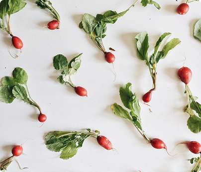
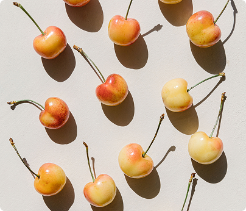
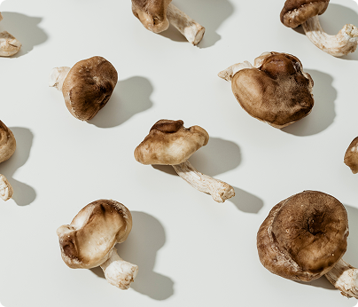

The Sunday Slowdown: Why We’re Trading Screens for Shared Plates
A journey through the flavors of community, the ethics of local farming, and the simple joy of a meal that lasts for hours.

There is a specific kind of magic that happens when the phones go face-down and the serving
platters start moving. In a world that feels increasingly fast-paced and fragmented, the
"Sunday Slowdown" has become our weekly act of rebellion. Whether it’s a perfectly roasted
side of salmon or potatoes seasoned with rosemary plucked ten feet from the table, these
moments remind us that the best "content" isn't found on a feed, but across a tablecloth.
We’ve spent the last month exploring how different cultures define hospitality. From the
hushed, exquisite izakayas of Ginza to the sun-drenched, cloying warmth of a Mediterranean
garden, the sentiment is universal: the quality of life is elevated when we eat with intention. It’s
not just about the calories; it’s about the conversation.
To truly appreciate the plate, you have to appreciate the pasture. We spent a morning tracking
the source of our meal, wandering through fields of white daisies and watching a huddle of
sheep under the watchful eye of a local Borzoi. There is a remarkable efficiency in nature that
we often overlook—a sophisticated, iconic cycle that brings the best of the Earth to our
kitchens.
This isn’t just "farm-to-table" marketing; it’s a return to a classic, discerning way of living.
Whether you are navigating the intricate street food stalls of Quezon City or enjoying a cutting-
edge tasting menu in Helsinki, the thread remains the same: respect for the ingredient. We’re
seeing a global shift—from the high-energy "riot girl" spirit of pop-up kitchens to the quiet,
curated excellence of a mountain-side bistro—proving that good food is the ultimate bridge
between us.
More from the Blog

The guide to heirloom radishes.

Why we're obsessed with Rainier cherries.
